Hamiltonian Monte Carlo
March 2021
Alessandro Candido
## Outline <div style="display: flex; justify-content: space-around; margin: 1em"> <ol> <li> problem introduction </li> <li> MCMC geometrical analysis </li> <li> improving MCMC with geometry </li> <li> tuning the algorithm </li> </ol> <ol start="5"> <li> recap </li> <li> what's more </li> <li> implementation </li> </ol> </div> Based on: _A Conceptual Introduction to Hamiltonian Monte Carlo_, Michael Betancourt (<a href="https://arxiv.org/abs/1701.02434">arXiv:1701.02434</a>) also available as a <a href="https://youtu.be/VnNdhsm0rJQ">talk</a>.
<h1 class="section-title"> <span class="txtclr red">Problem:</span> Evaluating Integrals </h1>
## The problem In order to study probability models a _single_ operation is required: <span class="hlight blue">evaluating expectation values</span>: <img src="assets/expectation-value.png" height="80" width="500"/> In general this involve <span class="txtclr blue">evaluating integrals</span><sup>†</sup>: <img src="assets/expectation-value-integral.png" height="120" width="700"/> but there is <span class="txtclr red">no general way</span> to do it <span class="txtclr yellow">analytically</span>. <p style="font-size: 0.6em"> <sup>†</sup> sums for discrete distributions </p>
## Numerical evaluation In practice very generic distribution are considered for applications<sup>†</sup> but this impose a <span class="hlight yellow">trade-off</span>: <center> <ul> <li><span class="txtclr yellow">numerical effort</span></li> <li><span class="txtclr yellow">approximation</span> (obtained precision)</li> </ul> </center> Then: <p class="txtclr green" style="text-align: center">what is the best way of extracting a finite sample?</p> <div style="display: flex; flex-direction: row"> <div> <p> a common strategy it's to use estimators/sampling in the <span class="hlight red">mode neighborhood</span> </p> </div> <div> 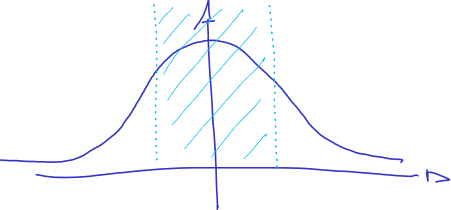 </div> </div> <p style="font-size: 0.6em"> <sup>†</sup> e.g. action generated on quantum fields </p>
## Space volume The <span class="txtclr red">mode neighborhood</span> is a _poor choice_ because the main ingredients are **two**: <ol> <li>the <span class="hlight blue">probability density</span> (integration kernel, <em>part of</em><sup>†</sup>)</li> <li>the <span class="hlight blue">space volume</span> (integration measure)</li> </ol> <div style="display: flex; justify-content: space-around"> <div style="display: flex; flex-direction: column; justify-content: space-around"> <p> Since usual densities has strong <em class="txtclr yellow">radial</em> dependency<sup>‡</sup> the <span class="txtclr blue">volume</span> becomes more and more relevant in <span class="hlight yellow">higher dimension</span>. </p> <p> It has the effect of enhancing the <span class="hlight green">tails</span> contribution. </p> </div> <div> <div><img src="assets/high-dim-box.png" width="90%"></div> <div>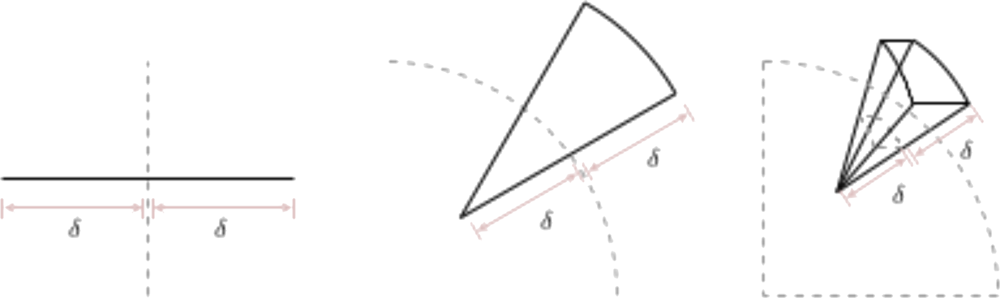</div> </div> </div> <p style="font-size: 0.6em"> <sup>†</sup> even the specific function is part of the kernel<br> <sup>‡</sup> they are relevant in a compact set </p>
## Typical Set <div style="display: flex; justify-content: space-between"> <div style="display: flex; justify-content: center; flex-direction: column;"> <ol> <li>density <span class="txtclr green">decays</span> <em>in the tails</em></li> <li>volume <span class="txtclr green">increases</span></li> </ol> <p> then a <span class="hlight green">typical finite scale</span> arise from the trade-off </p> </div> 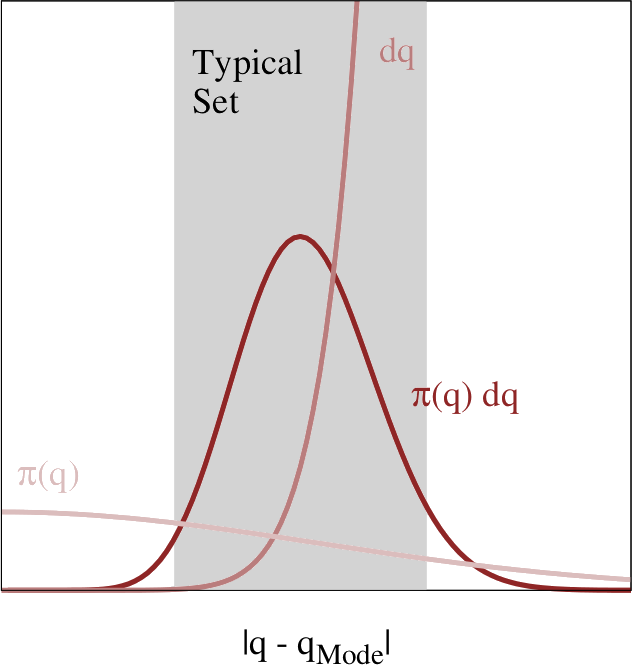 </div> <div style="display: flex; justify-content: space-around"> 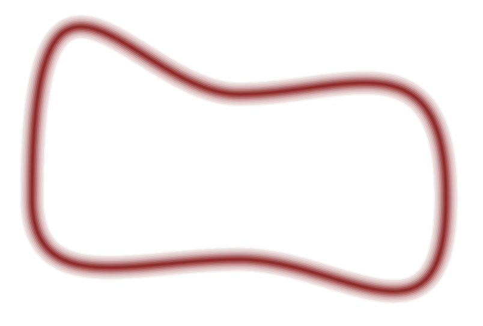 <div> <p>So a <span class="hlight blue">typical set</span> can be defined:</p> <p style="text-align: center"> <span class="txtclr blue"> the region that mostly contributes to the integral </span></p> </div> </div> <p style="font-size: 0.5em"> For the $1D$ case the volume contribution is constant, and other optimized methods are available (exploiting higher-order derivatives), performing better than MC techniques. </p>
<h1 class="section-title"> <span class="txtclr blue">Geometrical</span> perspective on <span class="txtclr blue">MC</span> </h1>
## Markov Chain Monte Carlo <div style="display: flex; justify-content: space-around"> <p> A well-known Monte Carlo technique is to use a <span class="txtclr blue">Markov Chain</span>, i.e. a <em class="txtclr blue">transition probably</em>: $$ \mathbb{T}_{\pi}(q'|q) $$ </p> <div style="display:flex; flex-direction: column; justify-content: center; margin-left: 20px"> 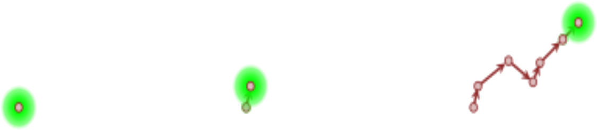 </div> </div> Indeed some theorems prove that a suitable chain, i.e. one being: <ul> <li> <p><span class="txtclr green">regular</span> (ergodic + aperiodic)</p> <ul> <li>this property guarantees a proper space exploration</li> </ul> </li> <li> <p>satisfying the <span class="txtclr green">balance</span></p> <ul> <li>this is what connects the chain to the target distribution $\pi$</li> <li>usually the stronger detailed balance is used</li> </ul> </li> </ul> will asymptotically produce an <span class="hlight blue">unbiased sample</span>.
## <span class="txtclr yellow">Ideal Picture</span> <div style="display: flex; justify-content: space-around"> <div style="flex-basis: 230%"> <p> The sampling happens in 3 phases: <ol> <li> <p>converges to <span class="txtclr green">typical set</span></p> <ul> <li style="color: gray">biased estimator</li> </ul> </li> <li> <p>first <span class="txtclr green">typical set</span> exploration</p> <ul> <li style="color: gray">fast convergence</li> </ul> </li> <li> <p>subsequent explorations</p> <ul> <li style="color: gray">slow improvement & plateau</li> </ul> </li> </ol> </p> </div> <div> <img src="assets/mcmc-phases.png" width="100%"> </div> </div> In order to compute the <span class="txtclr blue">variance</span> the <span class="hlight blue">autocorrelation</span> has to be taken into account, _effective sample size (EFF)_.
## <span class="txtclr red">Pathologies</span> Most chains are not able to resolve <em class="txtclr blue">tiny details</em> of the typical set, that might contain <em class="txtclr yellow">significant density</em>. <div style="display: flex; justify-content: space-around"> <div style="flex-basis: 150%; display: flex; flex-direction: column; justify-content: space-evenly"> <p> But the chain is <em>analytically</em> proved to be <strong class="txtclr green">asymptotically correct</strong>. </p> <p> Then it compensate spending more time near the <em class="txtclr blue">boundary</em> of the typical set. </p> </div> <div> <img src="assets/mcmc-pathologies.png"> </div> </div> This causes <span class="hlight yellow">oscillatory behavior</span> → highly <em class="txtclr red">increase converge time</em>. @--- ## Analyze pathologies Various consideration can be done about pathologies. #### Geometric ergodicity This property is <strong class="txtclr green">sufficient</strong> to guarantee an idealized behaviour (in particular a <em class="txtclr grey">Central Limit Theorem</em>). <span class="txtclr red">✗</span> it's hard to prove for a generic model <br><em class="txtclr grey" style="font-size: 0.8em">(in practice possible only for the simplest)</em> #### Detection Empirical statistics can be used as diagnostics for pathologies, e.g.: <p style="text-indent: 2em; margin: 0"> split $\hat{R} \sim 1$ </p>
# Exploit <span class="hlight green">geometry</span>
## Random chain <span class="hlight red">weakness</span> Typical MCMC are based on an <em class="txtclr yellow">accept/reject</em> mechanism.<br> <strong>Q:</strong> But how to choose the <strong class="hlight yellow">proposal</strong>? <p style="text-align: right; font-style: italic"> A: usually random (~ Gaussian)<sup>†</sup> </p> 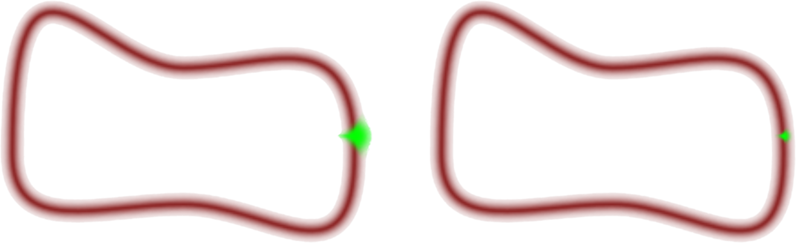 <div style="display: flex; justify-content: space-evenly; margin-bottom: -20px"> <div style="flex-basis: 100%"> <p> <strong>large steps</strong> usually <em class="txtclr red">falls outside</em> the typical set, since it has <em class="txtclr blue">"lower dimension"</em> </p> </div> <div> <p> <strong>small steps</strong> <em class="txtclr red">take forever</em> for performing full exploration </p> </div> </div> <p style="font-size: 0.6em"> <sup>†</sup> it can be optimized for specific targets </p> @--- ## Metropolis-Hastings This popular MCMC algorithm build the chain in two steps: <ol> <li>a <em class="txtclr yellow">proposal</em> distribution is used to extract first</li> <li>an <em class="txtclr green">accept</em>/<em class="txtclr red">reject</em> mechanism correct the proposal probability</li> </ol> The accept ratio is then: $$ \min\left(1, \frac{\mathbb{Q}(q|q')\pi(q')}{\mathbb{Q}(q'|q)\pi(q)}\right) $$ with $\mathbb{Q}$ the proposal, $q$ and $q'$ the old and new point respectively. <p style="text-align: right; margin-left: 34%"> <em>Rejecting is <em class="txtclr red">expensive</em>, so the proposal should be design to be close to the target.</em> </p>
## Optimized steps <div style="display: flex; justify-content: space-around"> <div style="flex-basis: 180%"> <p> Then the solution looks obvious: <p style="text-align: center"> <em>big steps <strong class="txtclr green">inside</strong> the set!</em> </p> </p> </div> <div> <img src="assets/typical-set-step-inside.png" style="margin: 0"> </div> </div> So we need to exploit the geometric information: a vector-field <div style="display: flex; justify-content: space-around"> <div> 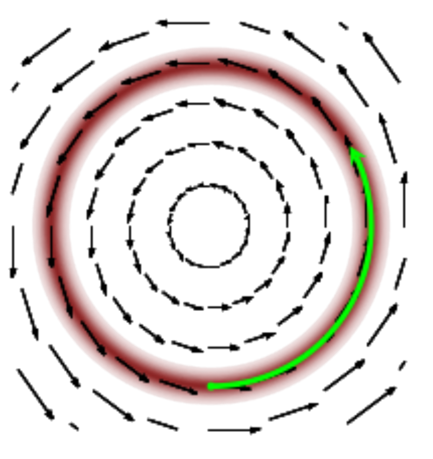 <p><em class="txtclr green">needed</em>: <span class="hlight green">longitudinal</span></p> </div> <div> <img src="assets/typical-set-gradient.png" width="50%" style="margin: 0"> <p><em class="txtclr blue">available</em>: <span class="hlight blue">gradient</span></p> </div> </div>
## Information extraction Here a <strong class="txtclr blue">big step</strong> is required, the best way is to pick the correct analogy: <strong class="hlight blue">classical physics</strong> <div style="display: flex; justify-content: space-around"> <div style="flex-basis: 25%"><img src="assets/planet-gradient.png" style="margin: 0"></div> <div style="align-self: center"><p>→</p></div> <div style="flex-basis: 25%">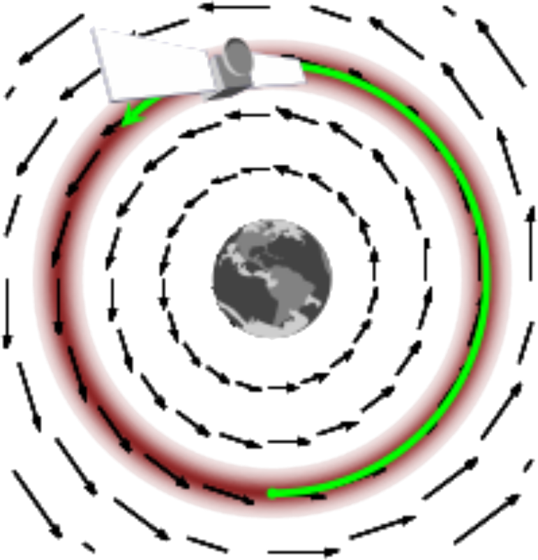</div> </div> <p style="margin-top: 0"> A new ingredient arise: <strong class="hlight green">momentum</strong> plays an important role </p> <div style="display: flex; justify-content: space-around"> <div style="flex-basis: 17%"> 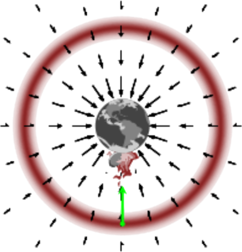 <p style="text-align: center; font-size: 0.7em">free fall</p> </div> <div style="flex-basis: 17%"> <img src="assets/planet-momentum-fall.png" style="margin: 0"> <p style="text-align: center; font-size: 0.7em">still fall</p> </div> <div style="flex-basis: 17%"> <img src="assets/planet-momentum-escape.png" style="margin: 0"> <p style="text-align: center; font-size: 0.7em">escape</p> </div> </div>
## Towards Phase Space <p style="font-size: 0.72em"> To add momentum we need to promote both our <span class="hlight blue">space</span> and <span class="hlight blue">distribution</span>: </p> <p style="font-size: 0.72em"> $$\{q\}, ~\pi(q) \qquad\rightarrow\qquad \{(q,p)\}, ~\pi(q,p)$$ </p> <p style="font-size: 0.72em"> The <em class="txtclr blue">canonical distribution</em> $\pi(q,p)$ is obtained from the <em>target distribution</em> adding the missing information: $\pi(q,p) \equiv \pi(p|q)\pi(q)$. </p> <img src="assets/typical-set-lift-momentum.png">
#### Volume conservation <p style="font-size: 0.70em; margin-bottom: 0"> Momenta <span class="txtclr blue">transform opposite</span> to coordinates under canonical transformations: </p> <ul> <li> <p> volume <span class="txtclr yellow">is conserved</span> $(q,p) \mapsto (q',p') \Rightarrow \mathrm{d}q~\mathrm{d}p = \mathrm{d}q'\mathrm{d}p'$ </p> </li> <li> <p>distribution <span class="txtclr yellow">is conserved</span> $\pi(q,p) = \pi(q',p')$</p> <ul> <li>since integrals are invariant under parametrization</li> </ul> </li> </ul> <h3 style="margin-top: 30px"><span class="hlight green">Hamiltonian</span></h3> <p style="font-size: 0.75em"> Since an <em class="txtclr green">invariant quantity</em> arose we'll give it a name: </p> $$ H(q,p) = - \log(\pi(q,p)) $$ <div style="text-align: left"> <ul style="font-size: 0.9em"> <li><span class="txtclr green">kinetic energy</span> $K(q,p) = - \log(\pi(p|q))$</li> <li><span class="txtclr green">potential energy</span> $V(q,p) = - \log(\pi(q))$</li> </ul> </div>
## Evolution <div style="display: flex; justify-content: space-around"> <div style="align-self: center"> <p style="font-size: 0.7em"> The <span class="hlight blue">gradient</span> of the <span class="txtclr blue">target distribution</span> is now encoded in the gradient of the <span class="txtclr blue">potential energy</span>. </p> <p style="font-size: 0.7em"> It is now possible to apply <span class="hlight green">Hamilton's equations</span> to evolve. </p> </div> <div style="align-self: center"> <p style="font-size: 0.7em"> $$ \begin{aligned} \frac{\mathrm{d}q}{\mathrm{d} t} &= + \frac{\partial H}{\partial p} = \frac{\partial K}{\partial p} \\ \frac{\mathrm{d}p}{\mathrm{d} t} &= - \frac{\partial H}{\partial q} = - \frac{\partial K}{\partial q} - \frac{\partial V}{\partial q} \end{aligned} $$ </p> </div> </div> Last step is the actual momentum introduction: <img src="assets/momentum-step.png">
# <span class="txtclr yellow">Tuning</span> the algorithm
## Arbitrary ingredients To realize evolution we introduced new arbitrary ingredients: <ol> <li> <span class="txtclr yellow">kinetic energy</span> $K(p,q)$, i.e. an entire function determining $\pi(q,p)$ and so the evolution </li> <li> <span class="txtclr yellow">integration time</span> $\tau$/$\tau_\pi(q)$, that in principle might depend on the full joint distribution and the starting point </li> </ol> Then <em class="txtclr red">how to choose them</em>? <p style="text-align: right"> A: again, <span class="hlight blue">investigate geometry</span> </p>
## Microcanonical <span class="hlight green">Energy level sets:</span> $H$ value is <em class="txtclr blue">conserved</em> by Hamilton's equations `$$H^{-1}(E) = \{(q,p)| H(q,p)=E\}$$` They foliate the whole _phase space_ (<span class="txtclr green">$2D-1$</span> sets). <img src="assets/microcanonical-decomposition.png" width="700">
## Exploration <div style="display: flex; justify-content: space-around"> <div style="align-self: center"> <ol style="list-style-type:upper-latin"> <li><em>random</em> <span class="txtclr green">set</span> extraction</li> <li><em>deterministic</em> <span class="txtclr green">set</span> evolution</li> </ol> </div> <div style="flex-basis: 40%">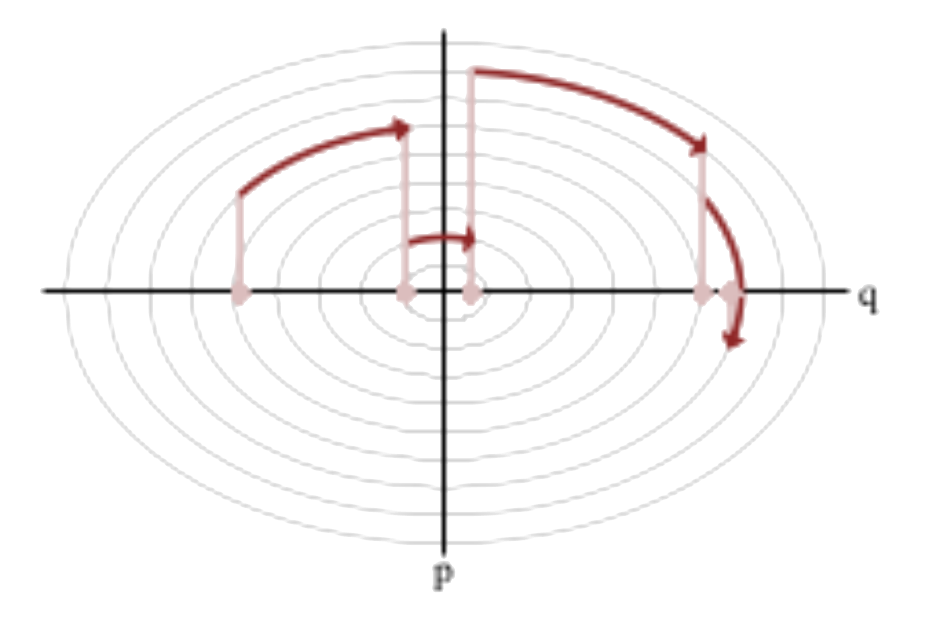</div> </div> <div style="display: flex; justify-content: space-around"> <div> <ol style="list-style-type:upper-latin"> <li>the <span class="hlight blue">energy extraction</span> should sample the <em class="txtclr blue">marginal energy distribution</em></li> </ol> <div><img src="assets/kinetic-marginal-energy.png"></div> </div> <div> <ol style="list-style-type:upper-latin" start="2"> <li>evolution cost proportional to $\tau$, exploration monotonic in $\tau$</li> </ol> <p style="text-align: right"> <span class="txtclr red">trade-off → optimal $\tau$</span> </p> </div> </div>
## Optimal criteria <ol style="list-style-type:upper-latin"> <li> <p style="font-size: 0.85em"> <span class="hlight yellow">Kinetic energy:</span> should be optimized according to the energy extraction step </p> <div style="display: flex; justify-content: center"> 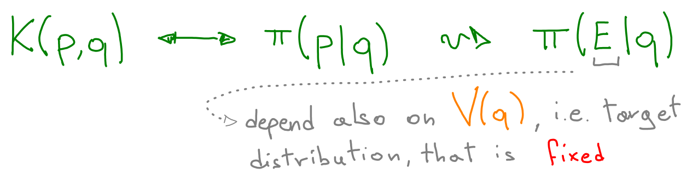 </div> </li> <li> <p style="font-size: 0.85em"> <span class="hlight yellow">Integration time:</span> determines the result of the evolution step </p> <div style="display: flex; justify-content: space-around;"> <div style="flex-basis: 50%"> 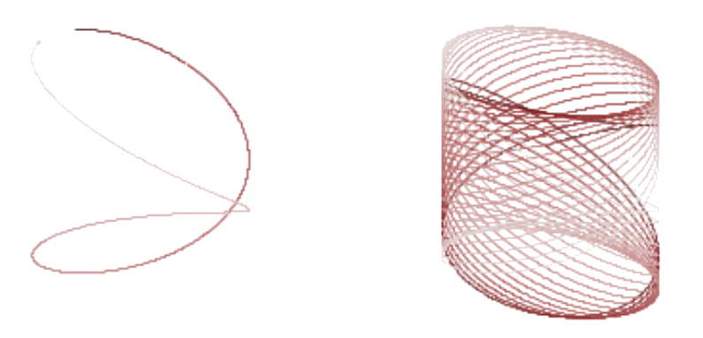 </div> <div> <dl> <dt> short time </dt> <dd> no Hamiltonian coherence advantage </dd> <dt> long time </dt> <dd> compact sets, eventually trajectories will come back </dd> </dl> </div> </div> </li> </ol> @--- ## Energy extraction Note the following: <div style="font-size: 0.9em"> <ol> <li> The comparison is done between $\pi(E)$ and $\pi(E|q)$ <span class="hlight yellow">$\forall q$</span>, since the way it is <em class="txtclr blue">jumping</em> out of the $q$ hyperplane (pick the momentum) determines how is going to cover the <em class="txtclr blue"> typical set in the phase space </em> </li> <li> Values of $\pi(E|q)$ for <span class="hlight yellow">$q$ out of the typical set</span> are not as relevant as the others </li> <li> <span class="hlight yellow">Not only the kinetic</span> energy is relevant in $\pi(E|q)$, since $$ E = H(q,p) = K(q,p) + V(q) $$ so the kinetic has to compensate also for the <em class="txtclr blue">potential</em> contribution to $E$ </li> </ol> </div> @--- ## Integration time <div style="display: flex; justify-content: space-around;"> <div style="align-self: center"> <ul style="list-style-type: none;font-size: 0.75em"> <li>$E_\tau$ temporal average</li> <li>$E_\phi$ spatial average over orbit $\phi$</li> </ul> </div> <div style="flex-basis: 40%"> 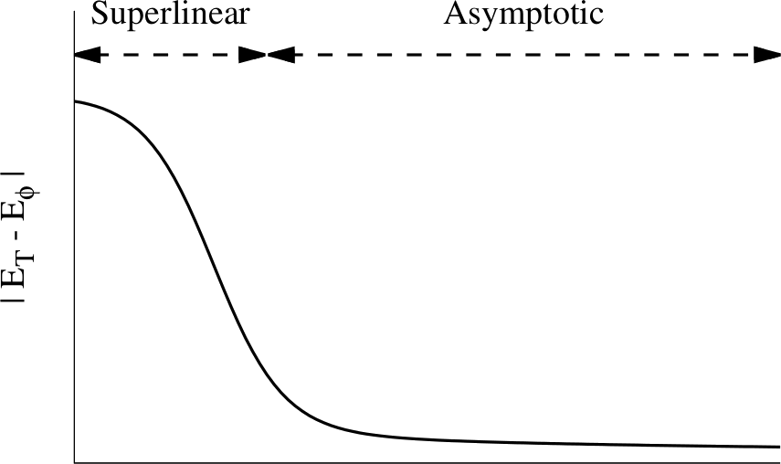 </div> <div style="flex-basis: 40%"> 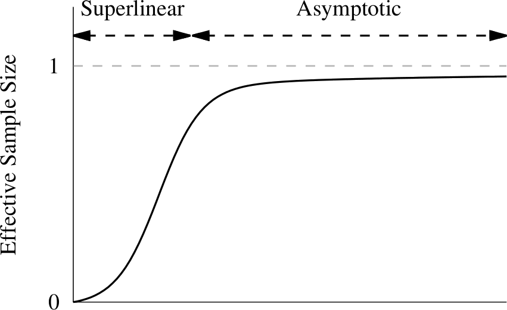 </div> </div> <div style="display: flex; justify-content: space-around;"> <div style="flex-basis: 70%"> 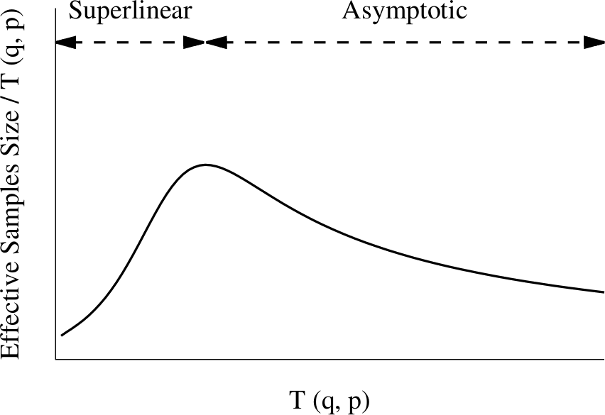 </div> <div style="align-self: center; margin-right: 2em"> <p style="text-align: center">after the peak it is less convenient to keep evolving</p> </div> </div> @--- ## Integration time <p style="margin-bottom: 0"> The optimal integration time <span class="hlight blue">depend on</span> the <span class="txtclr blue">specific model</span>, and usually <span class="txtclr blue">is dynamic</span>, e.g.: </p> $$ \pi_\beta \propto \mathrm{e}^{-|q|^\beta} \qquad\to\qquad \tau_{opt}(q,p) \propto (H(q,p))^{\frac{2-\beta}{2\beta}} $$ 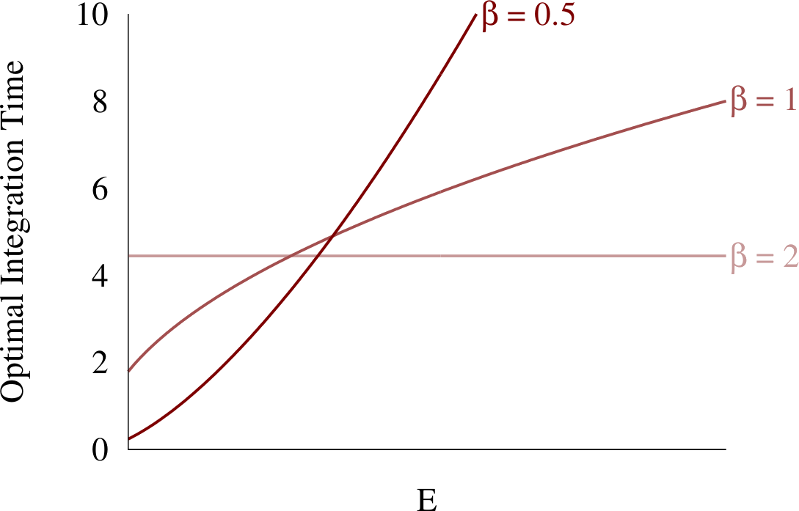
## Full algorithm <div style="display: flex; justify-content: space-evenly; font-size: 0.7em; text-align: left; margin-top: 1em"> <div> <span class="txtclr green" style="margin-right: 1em">Input: </span>$\pi(q)$ </div> <div style="display: flex; justify-content: flex-start;"> <div style="align-self: flex-start; margin-right: 1em"> <span class="txtclr yellow">Tuning:</span> </div> <div> <ul style="list-style-type: circle"> <li>$K(q,p)$</li> <li>$\tau(q)$</li> </ul> </div> </div> </div> 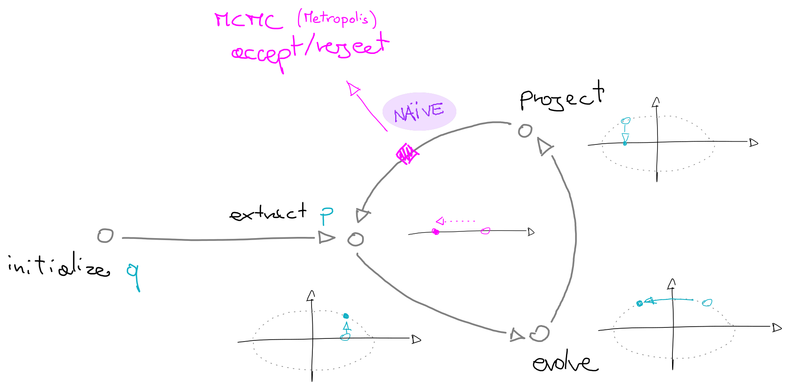
## What's more <h6 style="text-align: left"> <em class="txtclr blue">Integration</em> </h6> The evolution requires Hamilton's equations solution, so for the generic case a numeric integrator is required. A symplectic one is recommended, for trajectories stability (which one, is another parameter to tune, and also the step size). <h6 style="text-align: left"> <em class="txtclr blue">diagnostics</em> </h6> HMC is especially robust, since it admits specific diagnostics: <ul> <li><strong>poor kinetic energy</strong> <span class="txtclr blue">→</span> detected collecting histograms</li> <li>not resolving <strong>high curvature</strong> <span class="txtclr blue">→</span> divergent trajectories <ul> <li>because of special coincidence of symplectic integrators and HMC features</li> </ul> </li> </ul> <p style="text-align: right; font-style: italic"> Though diagnostics are never sufficient (just necessary) </p>
## What's more (2) <h6 style="text-align: left"> <em class="txtclr blue">NUTS</em> </h6> The <span class="txtclr blue">No U-Turn Sampler (NUTS)</span> is a slight extension of HMC, which selects the integration time on the fly, while doing evolution. <p style="text-align: center; font-style: italic; font-size: 0.7em"> Empirically, NUTS perform at least as efficiently as and sometimes more efficiently than a well tuned standard HMC method, without requiring user intervention or costly tuning runs. </p> Even more, it adjusts adaptively the step size. <p style="text-align: right; margin-top: 2em"> Remove the <strong>user arbitrariness</strong> for further <strong class="txtclr blue">optimization</strong>. </p>
## Implementations Here a couple of relevant implementation, mainly of NUTS: <div style="display: flex; justify-content: space-between"> <h5 style="align-self: center; text-align: left; margin: 0"> Stan <a href="https://mc-stan.org/" style="text-transform: initial; font-weight: normal; font-size: 0.7em">https://mc-stan.org/</a> </h5> <div style="align-self: center;"> <img src="assets/stan.png" width="300" style="margin: 0"> </div> </div> <p> a powerful and generic platform for statistical modeling </p> <div style="text-align: left"> <ul style="font-size: 0.9em"> <li>"full Bayesian statistical inference with MCMC sampling <em class="txtclr grey">(NUTS, HMC)</em>"</li> </ul> </div> <p style="font-size: 0.7em"> <em class="txtclr grey">interfaces available for multiple languages and platforms</em> </p> <div style="display: flex; justify-content: space-between"> <h5 style="align-self: center; text-align: left; margin: 0"> PyMC3 <a href="https://docs.pymc.io/" style="text-transform: initial; font-weight: normal; font-size: 0.7em">https://docs.pymc.io/</a> </h5> <div style="align-self: center;"> <img src="assets/pymc3.png" width="300" style="margin: 0"> </div> </div> <p> a python only library for Bayesian statistics, also implementing <em class="txtclr grey">NUTS</em> and <em class="txtclr grey">HMC</em> </p> @--- ## Implementations (HEP) <div style="display: flex; justify-content: space-between; margin-top: -0.3em"> <h5 style="align-self: center; text-align: left; margin: 0"> BAT <a href="https://github.com/bat/bat" style="text-transform: initial; font-weight: normal; font-size: 0.7em">https://github.com/bat/bat</a> </h5> <div style="align-self: center;"> <img src="assets/bat.svg" width="240" style="margin: 0"> </div> </div> <p style="margin-top: 0"> <em class="txtclr grey">Specific research fields</em> have developed their bayesian analysis framework, particularly <em class="txtclr grey">optimized for their needs</em> and applications. </p> <p> Some <em class="txtclr grey">particle physicists</em> did the same, in order to integrate with the existing environment, and deployed as <em class="txtclr grey">C++ library</em>. </p> <div style="display: flex; justify-content: space-between"> <div style="align-self: center;"> <img src="assets/batjl.svg" width="300" style="margin: 0"> </div> <h5 style="align-self: center; text-align: left; margin: 0; text-transform: initial"> BAT.jl <a href="https://github.com/bat/BAT.jl" style="text-transform: initial; font-weight: normal; font-size: 0.7em">https://github.com/bat/BAT.jl</a> </h5> </div> <p>The modern <em class="txtclr grey">reincarnation</em> of the former one, now written in <em class="txtclr grey">Julia</em>.</p>
## Thanks <img src="assets/cover.png" height="300"/>
## Where are integrals in <span class="txtclr green">Bayesian inference</span>? In <em class="txtclr blue">expectation values</em>! Since Bayesian inference produce distributions<sup>†</sup>, to compute <em>"observables"</em> an integral is required. In the <em class="txtclr blue">evidence</em>! $$ p(\boldsymbol{\theta}|\mathcal{D}, M) = \frac{p(\mathcal{D}|\boldsymbol{\theta},M)p(\boldsymbol{\theta} | M) }{\int \mathrm{d}\boldsymbol{\theta}~ p(\mathcal{D}|\boldsymbol{\theta},M)p(\boldsymbol{\theta} | M)} $$ Where the evidence $Z = \int \mathrm{d}\boldsymbol{\theta}~ p(\mathcal{D}|\boldsymbol{\theta},M)p(\boldsymbol{\theta} | M)$ might be particularly <em class="txtclr red">hard to compute</em>. <p style="font-size: 0.6em"> <sup>†</sup> MC is mainly a sampling algorithm, then it's quite natural to apply to sample distributions </p>